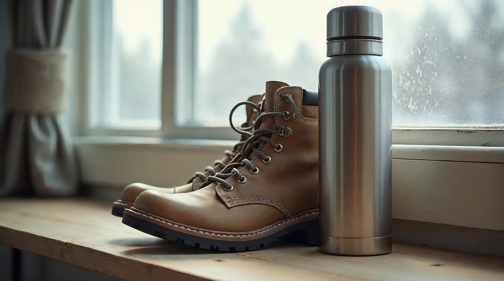
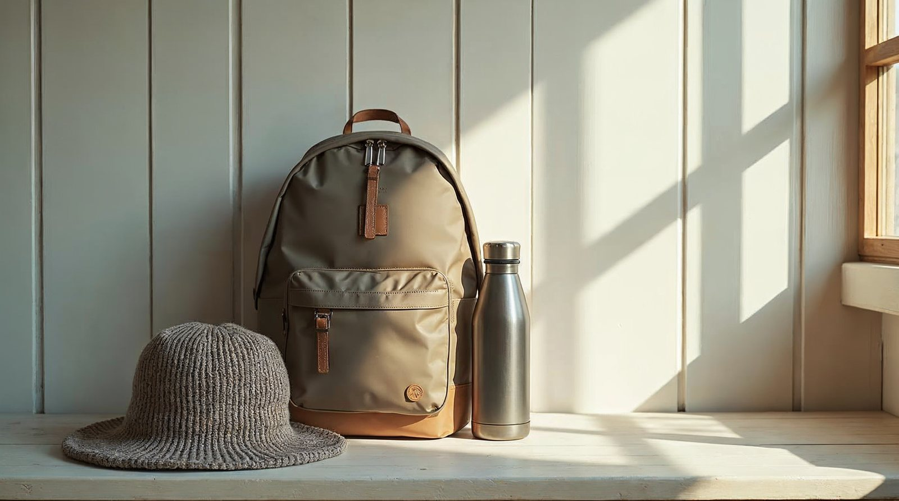
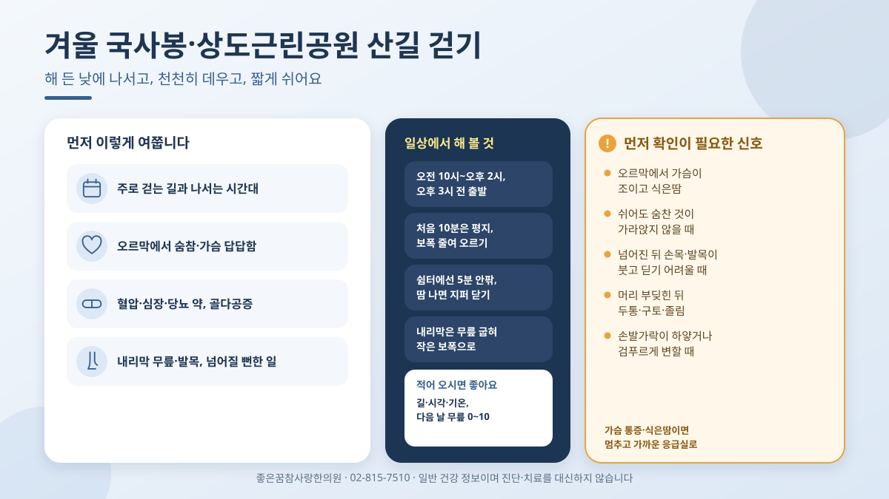

이종호 한의사 감수좋은꿈참사랑한의원 대표원장 (한의사 면허번호 19769)발행 2026-11-28 · 수정 2026-11-28
이 글의 차례
상도동과 노량진 쪽에 사시는 분들은 국사봉이나 상도근린공원처럼 집에서 가까운 산길을 산책 코스로 삼는 경우가 많습니다. 가을까지 즐겁게 걷던 길이라도 11월 말부터는 사정이 달라집니다.
그늘진 비탈과 나무 계단에는 오후까지 서리와 얼음이 남고, 낙엽 밑이 미끄러우며, 해는 오후 5시를 조금 넘기면 지고, 찬 공기 속 첫 오르막은 몸에 생각보다 큰 부담이 됩니다. 그래서 겨울 산길은 '조금 더 따뜻하게 입고 가면 된다'보다 나서는 시각, 옷과 신발, 오르막과 내리막을 걷는 방법, 쉬는 방법을 미리 정해 두는 것이 좋습니다.
다만 오르막에서 가슴이 조이거나 식은땀이 나고, 쉬어도 숨이 가라앉지 않거나, 넘어진 뒤 손목이나 발목이 붓고 아프다면 걷기 요령보다 확인이 먼저입니다.
왜 겨울 동네 산길은 평지 산책과 다르게 준비해야 할까요
- 산길 가운데 북쪽을 바라보는 비탈이나 나무가 빽빽한 계단은 낮에도 햇볕이 잘 들지 않습니다. 밤사이 생긴 서리와 얼음이 오후까지 남아 있기 쉽고, 낮에 조금 녹은 흙길이 해 질 무렵 다시 얼어 아침보다 저녁이 더 미끄러운 날도 있습니다.
- 늦가을에 떨어진 낙엽이 쌓인 자리는 겉으로는 마른 길처럼 보여도 그 아래가 얼어 있거나 젖어 있을 수 있습니다. 나무 계단과 데크의 모서리는 서리가 앉으면 특히 미끄럽습니다.
- 찬 공기를 갑자기 들이마시며 오르막을 오르면 혈관이 좁아지고 심장이 더 빨리 뛰어야 합니다. 이른 아침 기온이 가장 낮을 때 곧바로 가파른 길을 오르면 혈압이 쉽게 올라갈 수 있어, 혈압이나 심장 쪽 진료를 받는 분은 더 조심해야 합니다.
- 오르는 동안에는 몸이 데워져 땀이 나다가, 정상이나 쉼터에서 멈추면 젖은 속옷이 금세 식으면서 몸이 빠르게 차가워집니다. 이렇게 땀이 식은 날 저녁에 으슬으슬하고 목이 칼칼해지는 분이 많습니다.
- 내리막에서는 허벅지 앞 근육이 몸을 붙잡는 브레이크 역할을 하고, 무릎 앞쪽에 체중이 실립니다. 겨울에는 근육이 식어 잘 늘어나지 않아 같은 내리막도 무릎과 발목에 더 부담이 됩니다.
- 숲길은 큰길보다 먼저 어두워집니다. 오후 늦게 나서면 내려올 무렵 발밑이 잘 보이지 않아 얼음이나 돌부리를 놓치기 쉽습니다.
- 겨울 들어 바깥 활동이 줄어든 상태에서 가을과 같은 코스, 같은 속도로 걸으면 종아리와 발목, 무릎이 갑자기 늘어난 일을 감당하느라 다음 날 뻐근해질 수 있습니다.
- 두꺼운 패딩 하나만 입고 오르면 땀이 많이 나고 팔 움직임이 둔해집니다. 가방에 짐이 많으면 무게 중심이 흔들려 미끄러운 길에서 균형을 잡기 어렵습니다.
- 한의학에서는 겨울을 기운을 안으로 갈무리하는 계절로 보아, 땀을 지나치게 흘리며 기운을 쓰기보다 몸이 은근히 데워질 정도로 움직이는 것을 권해 왔습니다. 그래서 걷는 양만이 아니라 땀이 얼마나 나는지, 손발이 얼마나 찬지, 걷고 난 날 잠과 입맛이 어떤지도 함께 살핍니다.
먼저 이렇게 여쭙니다
- 주로 어느 길을, 어느 시간대에, 얼마나 오래 걸으시는지 여쭙니다.
- 오르막이나 계단에서 숨이 차서 말이 끊기거나, 가슴이 답답하거나 조이는 느낌이 든 적이 있는지 여쭙니다.
- 혈압약, 심장약, 당뇨약을 드시는지, 골다공증이 있다는 말을 들은 적이 있는지 여쭙니다.
- 내리막에서 무릎이나 발목이 불편한지, 최근 미끄러지거나 넘어질 뻔한 적이 있는지 여쭙니다.
- 예전에 발목을 자주 접질렸거나 무릎을 다친 적이 있는지 여쭙니다.
- 걷고 난 뒤 땀이 식어 오한이 들거나 감기 기운이 생긴 적이 있는지 여쭙니다.
- 걷고 난 날 밤의 잠, 다음 날 아침의 피로와 입맛은 어떤지 여쭙니다.
- 산길을 걸을 때 신는 신발의 종류와 바닥이 얼마나 닳았는지 여쭙니다.

일상에서 먼저 해 볼 수 있는 것
나서는 시각 정하기
- 겨울에는 해가 들고 기온이 조금 오른 오전 10시부터 오후 2시 사이가 무난합니다. 이른 새벽의 찬 공기 속 오르막은 피하는 편이 좋고, 혈압이 높은 분은 특히 그렇습니다.
- 늦어도 오후 3시 전에는 출발해 4시 전후에 내려오도록 계획합니다. 숲길은 해가 지기 전부터 어둑해집니다.
- 전날 밤 비나 눈이 왔거나 아침 기온이 크게 떨어진 날에는 산길 대신 가로등이 있는 동네 평지 길이나 실내에서 걷기로 바꿉니다.
- 혼자 걸을 때는 가족에게 어느 길로 가서 몇 시쯤 돌아올지 알려 두고, 휴대폰은 충전해서 나섭니다. 추위 속에서는 배터리가 빨리 닳기도 합니다.
옷과 신발
- 옷은 세 겹으로 입습니다. 땀을 빨리 말려 주는 얇은 속옷, 보온이 되는 중간 옷, 바람을 막는 겉옷 순서입니다. 오를 때는 겉옷 지퍼를 열어 땀을 줄이고, 쉬거나 내려갈 때는 닫습니다.
- 목도리나 넥워머, 귀를 덮는 모자, 장갑을 챙깁니다. 장갑을 끼면 주머니에 손을 넣고 걷지 않게 되어 미끄러질 때 손으로 짚거나 난간을 잡기가 수월합니다.
- 신발은 바닥 홈이 깊고 잘 미끄러지지 않는 운동화나 가벼운 등산화를 신습니다. 바닥이 닳아 매끈해진 운동화나 굽이 있는 부츠는 산길에서 피합니다.
- 작은 가방에 따뜻한 물이나 보리차, 여벌 장갑, 마른 수건 정도만 넣고 짐은 가볍게 합니다. 양손은 비워 둡니다.
집을 나서기 전 5분
- 제자리걸음을 1분 하고, 발목 돌리기를 양쪽 열 번씩, 발뒤꿈치 들었다 내리기를 열다섯 번 합니다.
- 무릎을 살짝 굽혔다 펴기를 열 번, 어깨를 뒤로 크게 돌리기를 다섯 번 합니다.
- 따뜻한 물을 한 컵 마시고 나섭니다. 빈속에 찬 공기 속 오르막을 오르면 쉽게 지치고 어지러울 수 있어, 가볍게라도 먹고 한 시간쯤 지나 출발합니다.
오르막과 계단
- 처음 10분은 평지나 완만한 길에서 천천히 걸으며 몸을 데운 뒤 오르막에 들어섭니다.
- 보폭을 줄이고 발바닥 전체로 디딥니다. 옆 사람과 말을 나눌 수 있을 정도의 숨이 알맞고, 말이 끊길 만큼 숨이 차면 속도를 줄이거나 잠깐 섭니다.
- 그늘진 계단, 나무 계단의 모서리, 낙엽이 쌓인 곳은 밟기 전에 얼음이 있는지 먼저 봅니다. 난간이 있으면 잡고, 반짝이는 자리는 피해서 디딥니다.
- 20~30분마다 잠깐 서서 숨을 고르되, 바람이 세게 부는 자리에서는 오래 멈추지 않습니다.
정상이나 쉼터에서
- 쉬는 시간은 5분 안팎으로 짧게 합니다. 땀이 났다면 겉옷 지퍼를 올리고 모자를 쓴 뒤 따뜻한 물을 몇 모금 마십니다.
- 쉼터의 운동기구는 몸이 식은 상태에서 갑자기 세게 쓰지 않습니다. 쓰더라도 가볍게 몇 번만 합니다.
내리막
- 오를 때보다 더 천천히, 무릎을 살짝 굽힌 채 작은 보폭으로 내려옵니다.
- 경사가 급하거나 얼어 있는 구간은 몸을 옆으로 돌려 비스듬히 내려오거나, 완만한 다른 길로 돌아옵니다.
- 산길이 끝나고 동네 계단이나 골목으로 들어서는 지점에서도 마음을 놓지 않습니다. 그늘진 골목 계단도 얼어 있을 수 있습니다.
돌아와서
- 젖은 속옷은 바로 갈아입고, 미지근한 물로 샤워합니다. 차가워진 몸으로 곧바로 뜨거운 탕에 들어가는 것은 혈압에 부담이 될 수 있어 피합니다.
- 종아리와 허벅지 앞쪽을 20~30초씩 천천히 늘려 줍니다.
- 그날 밤 잠과 다음 날 아침 무릎, 종아리 상태를 짧게 적어 둡니다.
겨울의 걷는 양
- 겨울 들어 처음 나선다면 30~40분 코스로 주 2~3회부터 시작합니다. 2~3주 동안 다음 날 무릎과 종아리에 불편이 남지 않으면 조금씩 늘립니다.
상황별 예시
- 예를 들어 가을까지 주말마다 국사봉을 오르내리던 60대가 12월 첫 주말 아침 7시, 기온이 가장 낮을 때 같은 길을 나선 경우, 첫 오르막에서 평소보다 숨이 차고 가슴이 답답하게 느껴질 수 있습니다. 이럴 때는 나서는 시간을 오전 10시 이후로 늦추고 첫 10분은 평지에서 몸을 데운 뒤 오르며, 가슴이 조이는 느낌이 들면 그 자리에서 멈추고 확인을 받습니다.
- 예를 들어 상도근린공원을 퇴근 뒤 저녁에 한 바퀴씩 돌던 직장인인 경우, 겨울에는 퇴근할 무렵 이미 어두워 숲길의 얼음과 돌부리가 잘 보이지 않습니다. 평일에는 가로등이 있는 동네 평지 길을 걷고, 산길은 주말 낮으로 옮겨 보는 것이 좋습니다.
- 예를 들어 오르는 동안 땀을 흠뻑 흘린 채 쉼터 벤치에서 15분 넘게 이야기를 나누다 내려온 40대인 경우, 저녁부터 몸이 으슬으슬하고 목이 칼칼해질 수 있습니다. 쉬는 시간을 짧게 하고, 오를 때 겉옷을 열어 땀을 줄이며, 여벌 장갑과 마른 수건을 챙겨 봅니다.
- 예를 들어 낙엽이 쌓인 나무 계단을 내려오다 미끄러져 손을 짚고 엉덩방아를 찧은 50대인 경우, 걸어서 내려올 수 있었더라도 손목이 붓고 누르면 아프거나 꼬리뼈 통증이 심하다면 걷기 요령보다 먼저 뼈 상태를 확인해야 합니다.
자주 하는 오해
- "땀을 흠뻑 흘려야 운동한 것"이라고 여기기 쉽지만, 겨울에는 땀이 식으면서 몸이 차가워지는 쪽이 더 문제가 되기 쉽습니다. 몸이 은근히 데워지고 숨이 조금 차는 정도면 충분합니다.
- 추울수록 빨리 걸어야 몸이 데워진다고 생각하는 분이 있습니다. 처음부터 빠르게 오르면 심장과 혈압에 부담이 커서, 첫 10분은 오히려 천천히 걷는 편이 좋습니다.
- 동네 뒷산이니 준비 없이 가도 괜찮다고 여기기 쉽지만, 짧은 길이라도 그늘진 계단의 얼음과 일찍 지는 해는 똑같이 조심해야 합니다.
- 내리막은 힘이 덜 드니 편하다고 생각하기 쉽지만, 무릎과 발목에 실리는 부담은 내리막이 더 클 수 있고 미끄러지는 일도 내리막에서 많습니다.
- 넘어졌는데 걸을 수 있으면 괜찮다고 여기는 분도 있습니다. 걸을 수 있어도 손목, 발목, 꼬리뼈에 금이 가 있는 경우가 있어 붓기와 통증이 이어지면 확인이 필요합니다.

스스로 점검해 보세요
- 겨울에도 해가 든 오전 늦게나 이른 오후에 나선다.
- 처음 10분은 평지에서 천천히 걸으며 몸을 데운다.
- 오르막에서 가슴이 조이거나 식은땀이 난 적은 없다.
- 바닥 홈이 살아 있는 신발을 신고, 장갑을 끼고 손을 비워 둔다.
- 쉼터에서 5분 넘게 땀을 식히며 앉아 있지 않는다.
- 내리막에서 무릎이 시큰거리는 날이 일주일에 한 번 이상 있다.
- 걷고 난 날 밤 잠이 깊고, 다음 날 아침 피로가 크지 않다.
한의원에서 함께 살필 수 있는 경우
- 겨울 산길을 걷고 난 뒤 무릎 앞쪽이나 종아리의 뻐근함이 며칠씩 이어지는 경우
- 겨울만 되면 손발이 유난히 차고, 조금만 걸어도 지나치게 지치는 경우
- 오래 쉬었다가 다시 산길을 걷기 시작하려는데, 지금 몸 상태와 걷는 양을 함께 정하고 싶은 경우
- 걷고 나서 땀이 식은 뒤 감기 기운이 자주 들고, 잠과 소화도 함께 흐트러지는 경우
좋은꿈참사랑한의원에서는 첫 방문 때 문진으로 주로 걷는 길과 시간대, 걷고 난 뒤 불편한 곳, 혈압·심장·당뇨처럼 함께 살펴야 할 병과 복용 중인 약을 먼저 여쭙고 맥부터 짚어 봅니다. 진맥으로 몸 전체의 리듬과 찬 정도, 피로를 살핀 뒤 무릎과 발목, 골반을 직접 움직여 보며 오르막과 내리막에서 어느 쪽에 부담이 실리는지 확인합니다.
필요하면 인바디 770으로 다리 근육량을 함께 보기도 하고, 힘줄이나 근육 상태를 더 자세히 볼 필요가 있으면 초음파로 살피기도 합니다. 가슴 증상이나 뼈 쪽 확인이 먼저라고 판단되면 다른 병원 진료를 안내해 드립니다.
그 뒤 걷는 시간과 횟수, 생활에서 바꿀 것을 함께 정하고, 다음 진료에서는 지난번 정한 걷기를 해 보신 뒤 몸이 어땠는지 이어서 여쭙니다.
얼마나 지켜보고 언제 상담할까요
- 나서는 시각과 옷차림, 오르내리는 방법을 바꾼 뒤 2~3주 동안 걷고 난 다음 날의 무릎과 종아리 상태를 적어 봅니다.
- 걷고 난 뒤 뻐근함이 하루 이틀 안에 풀린다면 걷는 양을 천천히 늘려 가도 됩니다.
- 뻐근함이 사흘 넘게 이어지거나, 걸을 때마다 같은 자리가 아프다면 상담을 받아 함께 살펴보시길 권합니다.
- 오르막에서 가슴이 답답하거나, 넘어진 뒤 붓고 아픈 곳이 있다면 지켜보지 말고 먼저 확인합니다.
이렇게 기록해 오시면 상담이 쉬워집니다
- 주로 걷는 길과 나서는 시각, 걸린 시간, 그날 기온
- 오르막에서 숨이 찬 정도와 쉰 횟수
- 걷고 난 뒤 불편한 곳과 정도를 0~10 숫자로, 다음 날 아침 상태
- 신고 걷는 신발과 바닥이 닳은 정도
- 복용 중인 약, 혈압이나 혈당을 재고 계시다면 그 기록
- 최근 미끄러지거나 넘어진 일이 있었다면 날짜와 다친 자리
이런 증상은 먼저 확인이 필요합니다
- 오르막에서 가슴이 조이거나 누르는 듯한 통증, 식은땀, 턱이나 왼팔로 뻗는 불편이 있는 경우
- 쉬어도 숨찬 것이 가라앉지 않거나, 눈앞이 캄캄해지며 쓰러질 것 같은 경우
이런 신호가 있으면 한의원보다 가까운 병원이나 응급실을 먼저 찾으세요.
관련 글
- 상도동 근처에서 걷기 습관을 만들고 싶을 때는 어떻게 시작하나요?
- 상도동 언덕길과 계단을 매일 오르내릴 때 무릎은 어떻게 챙기나요?
- 동작구 겨울 아침, 찬 공기 속 출근길에 무엇을 챙기면 좋을까요?

여쭙는 것
- 주로 어느 길을, 어느 시간대에, 얼마나 오래 걸으시는지 여쭙니다.
- 오르막이나 계단에서 숨이 차서 말이 끊기거나, 가슴이 답답하거나 조이는 느낌이 든…
- 혈압약, 심장약, 당뇨약을 드시는지, 골다공증이 있다는 말을 들은 적이 있는지 여쭙…
생활에서 해 볼 것
- 겨울에는 해가 들고 기온이 조금 오른 오전 10시부터 오후 2시 사이가 무난합니다.…
- 늦어도 오후 3시 전에는 출발해 4시 전후에 내려오도록 계획합니다. 숲길은 해가 지…
- 전날 밤 비나 눈이 왔거나 아침 기온이 크게 떨어진 날에는 산길 대신 가로등이 있는…
한의원에서 함께 살필 것
- 겨울 산길을 걷고 난 뒤 무릎 앞쪽이나 종아리의 뻐근함이 며칠씩 이어지는 경우
- 겨울만 되면 손발이 유난히 차고, 조금만 걸어도 지나치게 지치는 경우
- 오래 쉬었다가 다시 산길을 걷기 시작하려는데, 지금 몸 상태와 걷는 양을 함께 정하…
먼저 확인이 필요한 신호
- 오르막에서 가슴이 조이거나 누르는 듯한 통증, 식은땀, 턱이나 왼팔로 뻗는 불편이…
- 쉬어도 숨찬 것이 가라앉지 않거나, 눈앞이 캄캄해지며 쓰러질 것 같은 경우
한눈에 보는 표
| 구분 | 핵심 |
|---|---|
| 여쭙는 것 | 주로 어느 길을, 어느 시간대에, 얼마나 오래 걸으시는지 여쭙니다. 오르막이나 계단에서 숨이 차서 말이 끊기거나, 가슴이 답답하거나 조이는 느낌이 든 적이 있는지 여쭙니다. |
| 생활에서 해 볼 것 | 겨울에는 해가 들고 기온이 조금 오른 오전 10시부터 오후 2시 사이가 무난합니다. 이른 새벽의 찬 공기 속 오르막은 피하는 편이 좋고, 혈압이 높은 분은 특히 그렇습니다. 늦어도 오후 3시 전에는 출발해 4시 전후에 내려오도록 계획합니다. 숲길은 해가 지기 전부터 어둑해집니다. |
| 한의원에서 함께 살필 것 | 겨울 산길을 걷고 난 뒤 무릎 앞쪽이나 종아리의 뻐근함이 며칠씩 이어지는 경우 겨울만 되면 손발이 유난히 차고, 조금만 걸어도 지나치게 지치는 경우 |
| 먼저 확인이 필요한 신호 | 오르막에서 가슴이 조이거나 누르는 듯한 통증, 식은땀, 턱이나 왼팔로 뻗는 불편이 있는 경우 쉬어도 숨찬 것이 가라앉지 않거나, 눈앞이 캄캄해지며 쓰러질 것 같은 경우 |
자주 묻는 질문
겨울에는 산길보다 평지를 걷는 편이 나은가요?
날씨와 몸 상태에 따라 다릅니다. 해가 든 낮에 길이 말라 있고 오르막에서 가슴 불편이 없다면 산길도 걸을 수 있습니다. 전날 눈비가 왔거나 기온이 크게 떨어진 날, 혈압이 잘 조절되지 않는 시기에는 평지나 실내 걷기로 바꾸는 편이 무난합니다.
혈압약을 먹고 있는데 겨울 아침 산책을 해도 되나요?
기온이 가장 낮은 이른 아침보다 해가 든 뒤에 나서고, 처음 10분은 평지에서 천천히 걷는 편이 좋습니다. 약은 처방한 의사와 상의 없이 바꾸지 않고, 오르막에서 가슴이 답답하거나 어지러우면 멈추고 확인을 받으세요.
산길을 다녀온 다음 날 무릎 앞쪽이 시큰거리면 어떻게 하나요?
하루 이틀 쉬면서 계단과 내리막을 줄이고, 다음 걷기는 내리막이 완만한 코스로 짧게 해 봅니다. 사흘 넘게 이어지거나 붓기가 있으면 상담을 받아 무릎과 다리 움직임을 함께 살펴보세요.
땀이 식어 감기에 자주 걸리는데 어떻게 입으면 좋을까요?
두꺼운 옷 하나보다 얇은 옷을 세 겹으로 입고, 오를 때는 겉옷을 열어 땀을 줄이며 쉬거나 내려갈 때 닫습니다. 쉼터에서는 오래 앉아 있지 않고, 돌아오면 젖은 속옷부터 갈아입습니다.
걷다가 미끄러졌는데 아프지 않으면 그냥 지켜봐도 되나요?
통증과 붓기가 없고 하루 이틀 지나도 괜찮다면 지켜볼 수 있습니다. 다만 손목이나 발목이 점점 붓거나, 체중을 싣기 어렵거나, 머리를 부딪혔다면 지켜보지 말고 먼저 확인을 받으세요.
좋은꿈참사랑한의원은 재진 때 지난번 이야기부터 이어서 여쭙니다. 진료시간과 예약은 오시는 길에서 확인하세요.
어디서 상담받을 수 있나요?
좋은꿈참사랑한의원은 서울 동작구 만양로2길 2 신성빌딩 3층·5층(서울 동작구 상도동, 7호선 상도역 3번 출구 근처)에 있습니다. 한의사 3명(이종호 대표원장, 조영기 수석진료원장, 정원영 진료원장)이 진료합니다. 진료시간은 평일 09:30~20:00(점심 13:00~14:00), 토·일·공휴일 09:30~15:00이며, 방문 전 전화로 확인을 권합니다. 예약은 네이버 예약, 카카오톡 상담, 전화 02-815-7510로 받습니다.
이 글은 일반적인 건강 정보이며 개인의 진단이나 치료를 대신하지 않습니다. 증상이 있거나 복용 중인 약이 있다면 진료를 통해 확인하세요. 치료 효과는 개인마다 다를 수 있습니다.
작성 기준: 일반적으로 알려져 있는 건강 정보를 참고해 정리했습니다(대표원장 감수). 증상 기록은 1~2주 동안 하루 1회, 비슷한 시간에 적어 오시면 지난 상태와 비교하기 쉽습니다.